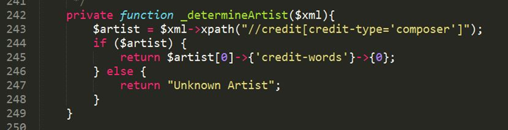
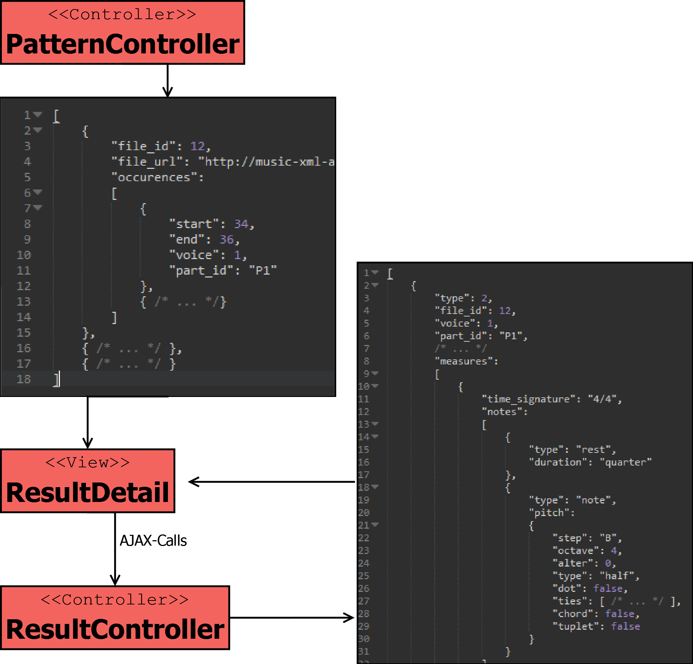

Music XML Analyzer

http://freakimkaefig.github.io/Music-XML-Analyzer/
http://music-xml-analyzer.herokuapp.com/
Zusammenfassung
Bei einer komplexen Untersuchung von Musikstücken ist es oft unumgänglich, auch die Partitur auszuwerten. Die manuelle Analyse ist, vor allem wenn mehrere Partituren untersucht werden sollen, oftmals aufwendig und mühselig. Neben kostenpflichtiger Software wie Finale[1] und kostenloser Software wie Musescore[2] , die zum Erstellen und Bearbeiten von Partituren geeignet sind, entstehen auch einige Projekte, die das Festhalten und Bearbeiten von Noten im Browser erlauben. Beispiele hierfür sind Vexflow[3] oder Noteflight[4] . Diesen Programmen fehlt jedoch eine umfangreiche Komponente zur Analyse und statistischen Auswertung von Musikstücken. Der Music-XML-Analyzer füllt diese Lücke in dem es die Möglichkeit bietet, Partituren im Music-XML-Format[5] statistisch auszuwerten und in diesen Musikstücken nach verschiedenen musikalischen Mustern zu suchen.
Setup-Anweisungen
Da es sich um eine Webanwendung handelt, sind zum Betrieb keine Installationsschritte notwendig. Die Anwendung ist unter der URL http://music-xml-analyzer.herokuapp.com zu erreichen. Da es sich bei der Serverumgebung um eine kostenlose Platform as a Service handelt gehen damit auch kleinere Einschränkungen einher. Bei längerer Inaktivität der Anwendung begibt sich die Laufzeitumgebung in einen Ruhemodus, welcher das erneute „Aufwecken“ der Anwendung erfordert. Das führt dazu, dass der Initialzugriff auf die Anwendung unter Umständen etwas länger dauern kann. Aufgrund der Beschaffenheit des Projekts wurde die Seite lediglich für Bildschirme mit einer Mindestbreite von 1200 Pixeln optimiert. Um eine spätere Anpassung für weitere Bildschirmgrößen zu ermöglichen wurde das Twitter Bootstrap Framework eingesetzt.
Problemstellung
Das System soll Musikinteressierte oder Forscher dabei unterstützen, Musik einerseits statistisch auszuwerten und andererseits konkrete Suchmuster in mehreren Musikstücken aufzufinden. Dabei sollen die Eingabe von Mustern intuitiv und die Auswertung ansprechend und verständlich gestaltet werden. Der Export der automatischen Analyse der XML Dateien in das gängige Comma-separated values (csv) Format, sowie die Möglichkeit des Exports der Suchergebnisse als Portable Document Format (pdf) sollen das Nutzungserlebnis abrunden.
Projektbeschreibung
Das System lässt sich grob in drei Teilbereiche aufgliedern, die in den folgenden Abschnitten näher erläutert werden. Zur besseren Übersicht werden die Teilbereiche entsprechend dem Workflow des Nutzers aufgeteilt. Im ersten Schritt erfolgt der Upload von Dateien und daraufhin die automatische, statistische Auswertung. Den letzten Schritt stellt die Suche nach Mustern in den hochgeladenen Dateien dar. Um die einzelnen Teilbereiche auch technisch voneinander zu trennen sind diese in den folgenden Kapiteln in fünf Komponenten entsprechend der technischen Zuständigkeiten aufgeteilt.
Auf der Startseite der Anwendung (Abbildung 1) bekommt der Nutzer einen kleinen Überblick über die Funktionen und kann per Klick auf den Button START UPLOADING NOW! mit der Arbeit beginnen.
 Abbildung 1: Startseite (Screenshot)
Abbildung 1: Startseite (Screenshot)
Upload
Um dem Anwender die Möglichkeit der statistischen Analyse von Musikstücken zu bieten, müssen zunächst Dateien im MusicXML-Format hochgeladen werden. Das im XML-Standard realisierte, offene Austauschformat MusicXML wird von vielen Notensatzprogrammen unterstützt und löst das vorangehende Notation Interchange File Format (NIFF)[5] ab. Zudem bieten einige Portale, wie zum Beispiel Musescore6 den kostenlosen Download von Partituren im MusicXML-Format an, wodurch eine Vielzahl von Musikstücken bereits verfügbar ist. Auf der Homepage von Musescore sind die Partituren in verschiedenen Formaten verfügbar und können nach kostenloser Registrierung heruntergeladen werden. Mit Hilfe der ebenfalls kostenlosen Software können die Partituren in andere Formate (mscx, mscz, xml, mid, ogg, wav oder pdf) umgewandelt werden. Abbildung 2 zeigt die Uploadfunktion des Music-XML-Analyzer, nachdem verschiedene Dateien hochgeladen wurden. Mit einem Klick auf ANALYZE werden die Dateien ausgewertet.
 Abbildung 2: Upload (Screenshot)
Abbildung 2: Upload (Screenshot)
Statistische Analyse
Die hochgeladenen Dateien werden nach erfolgreichem Upload automatisch analysiert. Dabei werden neben den Noten und Pausen unter anderem auch die enthaltenen Intervalle, Taktarten und Instrumente gezählt. Die serverseitige Analyse von XML Dateien beginnt stets mit einem XPath-Ausdruck[8] gefolgt vom Parsen der resultierenden Daten mittels PHP[9]. Anhand des nachfolgenden Beispiels (Abbildung 3), soll der Ablauf und die Funktionsweise kurz erläutert werden.  Abbildung 3: Code-Beispiel (Screenshot)
Für die Verarbeitung von XML bietet PHP die Schnittstelle SimpleXML[10]. Das Objekt „$xml“ der Klasse SimpleXMLElement wurde vorab durch die Klassen-Funktion „simplexml_load_file()“ mit einer XML-Datei erzeugt. Dieses Objekt ermöglicht die Verwendung der eigentlichen XPath-Ausdrücke. Der Name des Künstlers bzw. Komponisten eines musikalischen Werkes steckt innerhalb eines „“ – Elements, welches wiederum ein „“ – Element mit dem Wert „composer“ enthält. Der XPath-Ausdruck in Zeile 243 durchsucht das SimpleXMLElement („$xml“) nach allen Elementen, die diese Bedingungen erfüllen. Da die Angaben zu Künstler bzw. Komponist nach MusicXML-Konvention zu Beginn einer XML-Datei gemacht werden, wird in Zeile 245 auf das erste Element zugegriffen, dass die oben genannten Bedingungen erfüllt. Der Name des Künstlers versteckt sich letztlich in einem weiteren XML-Element „“. Obiges Beispiel veranschaulicht die Umwandlung einer XML-Datei zu einem PHP-Simple-XML-Element-Objekt, anhand dessen XPath-Ausdrücke angewandt werden können.
Dashboard
Im Dashboard (Abbildung 4) erhält der Nutzer einen Überblick über die wichtigsten Fakten und Statistiken zu den einzelnen Musikstücken oder über den gesamten hochgeladenen Korpus. Dabei werden die Noten- und Intervallverteilung in einem Balkendiagramm, die Distribution der Tonarten, Notenlängen und Taktarten in einem Kreisdiagramm dargestellt. Daneben werden noch einige Fakten zur Anzahl und zum Auftreten der Takte, Noten, Pausen und Instrumente angegeben. Darüber hinaus bietet der Button EXPORT AS CSV die Möglichkeit die Daten für die einzelnen Musikstücke als CSV zu exportieren.
 Abbildung 4: Dashboard (Screenshot)
Abbildung 4: Dashboard (Screenshot)
Suche nach Patterns
Vom Dashboard aus gelangt der User durch einen Klick auf den Button SEARCH FOR PAT-TERNS oder im Header via SEARCH zur Pattern-Suche. Die verschiedenen Möglichkeiten, die der Benutzer hat, um seine Musikstücke zu durchsuchen, werden im Folgenden kurz erläutert und sind in Abbildung 5 dargestellt.
Im ersten Schritt muss zwischen MELODY, SOUND SEQUENCE oder RHYTHM unterschieden werden, wobei MELODY hier voreingestellt ist. Nach der Auswahl des Modus Operandi kann der Benutzer entweder per Maus direkt auf den Notenzeilen, oder mit Hilfe der Buttons die gewünschten Elemente eingeben. Werden die Buttons zur Noteneingabe verwendet, muss jede Note mit einem Klick auf ADD hinzugefügt werden. Durch Klick auf DELETE wird die zuletzt eingegebene Note gelöscht. Alle Noten werden in der angezeigten Notenzeile dargestellt und können jederzeit abgespielt werden. Wird die Maus zur Noteneingabe verwendet, so wird standardmäßig eine Viertelnote ohne Vorzeichen an der entsprechenden Stelle eingegeben. Triolen, punktierte Noten, Vorzeichen oder eine andere Notenlänge müssen mit Hilfe der Buttons eingestellt werden. Alle Noten der dritten bis sechsten Oktave mit einer Dauer von einer Ganzen Note bis zur 64tel Note können ausgewählt werden. Auch Noten mit Kreuz- oder B-Vorzeichen können hinzugefügt werden.
 Abbildung 5: Search (Screenshot)
Abbildung 5: Search (Screenshot)
Suchergebnisse
Ist der Benutzer mit seiner Noteneingabe zufrieden, werden durch einen Klick auf SEARCH alle hochgeladenen Musikstücke nach dem erstellten Pattern durchsucht. Abbildung 6 zeigt die Ergebnisseite der Suche. Hier wird im oberen Bereich das gesuchte Pattern noch einmal dargestellt und darunter die Musikstücke, welche das Pattern enthalten, samt jeweiliger Häufigkeit der Treffer.
 Abbildung 6: Searchresult (Screenshot)
Abbildung 6: Searchresult (Screenshot)
Klickt der User auf einen Treffer, so wird eine Detailansicht aufgerufen, wie in Abbildung 7 zu erkennen ist. Hier werden neben dem Titel des Stücks die jeweiligen Trefferstellen in einem Carousel dargestellt und farblich hervorgehoben. Im unteren Bereich wird die aktuell betrachtete Seite der Treffer angezeigt.
Mit Hilfe der Pfeile kann zwischen den Treffern hin und her gewechselt werden. Informationen, in welcher Stimme und in welchem Takt das Pattern gefunden wurde, werden ebenfalls dargestellt. Ein Klick auf PLAY spielt den dargestellten Auszug, der das Pattern enthält, ab. Der Nutzer hat außerdem die Möglichkeit, alle visualisierten Treffer als PDF-Dokument zu exportieren, was mit einem Klick auf den Button EXPORT AS PDF erreicht werden kann.
Abbildung 8 zeigt die dazu benötigte Komponente zur Generierung von Partituren aus MusicXML-Daten.
 Abbildung 7: Searchresult Details (Screenshot)
Abbildung 7: Searchresult Details (Screenshot)
 Abbildung 8: Generierung von Ergebnissauschnitten (eigene Grafik)
Die vom PatternController erhaltenen Suchergebnisse geben an, in welchem XML-Dokument Treffer gefunden wurden und bieten Aufschluss über den Index der Start- und Endnote, sowie darüber, in welchem Part und in welcher Stimme sich das Ergebnis befindet. Diese Objekte werden zunächst an den View ResultDetail weitergegeben. Aus Performancegründen werden von dort aus für jedes Element im oben genannten Carousel nacheinander die Ausschnitte der Partitur nachgeladen. Im ResultController werden dazu mithilfe der PHP-Implementierung von DOMDocument[11] und DOMXPath[12] die jeweiligen Abschnitte extrahiert und das gefundene Pattern farbig markiert. Dabei besteht die Komplexität darin, dass im Grunde alle möglichen XML-Elemente des MusicXML-Dokuments richtig interpretiert werden müssen, um ein Ausgabeobjekt zu erhalten, das die Ausgabe der Noten mit der Javascript-Rendering-Bibliothek ermöglicht. Im Rahmen dieses Projekts beschränkte sich dies jedoch auf die wichtigsten Elemente zur Darstellung unterschiedlichster Notenlängen, Tonhöhen und rhythmischer Besonderheiten.
Architektur und Implementierung
Projektablauf und Zuständigkeiten
Die Projektanforderungen wurden zunächst in Form von User Stories erfasst, welche in Anhang A User Stories einzusehen sind. Um den Projektablauf zu organisieren, wurde das Issue-System von Github benutzt. Hierbei repräsentierten die Meilensteine jeweils eine User Story. Diesen wurden anschließend kleinere Teilaufgaben, die Issues, zugewiesen. Eine zusätzliche Erweiterung für Google Chrome namens ZenHub[13] erlaubte die Anordnung der Issues in Form eines Boards mit verschiedenen Pipelines. Das verwendete Board wurde, angelehnt an das Projektmanagement-Framework Kanban[14], in „Backlog“, „Nice to have“, „To-Do“, „In Progress“ und „Closed“ unterteilt. Zu Beginn des Projekts konnten die Zuständigkeiten relativ klar aufgeteilt werden. Während Lukas Lamm für die Implementierung des verwendeten Web-Frameworks und die daran gebundene Datenbankarchitektur zuständig war, kümmerte sich Tobias Semmelmann um die Frontend-Seite des Systems und dabei unter anderem um die grafische Aufbereitung der Analyseergebnisse. David Lechler wurde mit der Traversierung, Analyse und Entwicklung der Suchalgorithmen für die MusicXML-Dateien betraut. Matthias Schneider kümmerte sich um die Eingabe der Suchpatterns, deren Visualisierung und Weitergabe an die Suchkomponente. In späteren Projektphasen war keine klare Abgrenzung der Zuständigkeiten mehr möglich. Weitere Ergänzungen des Projektumfangs wurden meist gemeinsam bearbeitet. Darüber hinaus übernahm Lukas Lamm die Darstellung der Suchergebnisdetails in Form von Takten und Noten und kümmerte sich um die beiden Export-Funktionen. David Lechler übernahm die Wiedergabe der Ergebnisse mit Midi.js. Die anfängliche Recherche zu den Grundlagen von MusicXML und zu bereits existierenden, ähnlichen Anwendungen, sowie das Sketching und die abschließende schriftliche Ausarbeitung des Projektverlaufs wurden gemeinsam erledigt.
Frameworks und Bibliotheken
Als Grundlage der Anwendung wurde das PHP Framework Laravel[15] in Version 4.2 verwendet, welches auf dem Model-View-Controller-Pattern basiert. Dieses bietet Möglichkeiten, das Routing zwischen den einzelnen Controllern und Views zu handhaben, sowie die Gestaltung der Views durch Templates. Zudem konnte mit den in Laravel integrierten Models das Datenbankschema in SQL und die einfache Abfrage realisiert werden. Zur Realisation interaktiver Funktionen und Vereinfachung von Javascript-Code wurde das Framework jQuery[16] verwendet. Zudem wird jQuery vom eingesetzten CSS-Framework Twitter Bootstrap[17] und weiteren hier genannten Bibliotheken benötigt. Um einen modernen Look im Material Design zu erzielen, wurde zudem das Theme Material Design for Bootstrap[18] eingebunden. Die Darstellung der Graphen erfolgt mit der Bibliothek D3.js[19], die Visualisierung der Noten hingegen wird über die API Vexflow[20] abgewickelt. Die Visualisierung von Statusnachrichten wird mit dem Plugin Typed.js[21] animiert. Die Darstellung und Abwicklung von hochgeladenen Dateien erfolgt durch die Bibliothek Dropzone.js[22] im Zusammenspiel mit dem Framework Laravel. Die Audioausgabe von eingegebenen Pattern zur Suche oder von Ergebnisausschnitten wird mit dem Framework MIDI.js[23] abgewickelt, während die Exportfunktion der Ergebnisse als PDF mit dem Plugin jsPDF[24] erfolgt.
Systemarchitektur
Abbildung 9 zeigt den Aufbau des Laravel-Frameworks im Zusammenspiel mit den jeweiligen Javascript-Komponenten. Die Laravel-Komponente kümmert sich dabei um die serverseitige Logik der Anwendung, wie die Auslieferung von HTML-Seiten über eine integrierte Templating-Engine und die Kommunikation mit der Datenbank zur persistenten Speicherung. In Abbildung 9 wird auch der Aufbau nach dem Model-View-Controller-Pattern deutlich, demzufolge die grafische Repräsentation (View) von der Logik (Controller) und der Datenschicht (Model) getrennt ist. Die Javascript-Komponente der Anwendung ist ebenso nach dem MVC-Pattern aufgebaut und kümmert sich hauptsächlich um die Interaktivität der Anwendung. Beispielsweise werden die Suchmuster in Javascript vorerst clientseitig zwischengespeichert und erst beim Absenden der Suchanfrage an den Server geleitet. Weitere Aufgabengebiete sind die grafische Aufbereitung der Analysedaten und Partitur-Ausschnitte, sowie die Wiedergabe einzelner Sequenzen.
 Abbildung 9: Systemarchitektur
Abbildung 9: Systemarchitektur
Um dem Nutzer die Möglichkeit zu bieten, seine Arbeit ohne zusätzliche Speicherung immer aktuell zu halten, wurde ein einfaches Datenbankschema entwickelt, welches in Abbildung 10 als ERM-Model aufgeführt ist. Den Nutzern wird dabei beim ersten Betreten der Anwendung eine ID zugewiesen, die gleichzeitig als Cookie beim Nutzer im Browser hinterlegt wird. Auf den Server geladene Dateien werden entsprechend mit dem Nutzer referenziert, ebenso wie einem Upload-Objekt nach erfolgreicher Analyse dessen Ergebnisse zugeordnet werden. Bei der Konzeption wurde bewusst auf eine aufwendige Nutzerverwaltung mit Registrierung und Anmeldung verzichtet, da dies den schnellen Einstieg oft erheblich behindert.
 Abbildung 10: Datenbankschema
Abbildung 10: Datenbankschema
Ausblick
Im Folgenden werden einige Funktionen und Erweiterungsmöglichkeiten aufgezeigt, die nicht mehr implementiert, beziehungsweise als nice-to-have deklariert wurden. Der Grund hierfür ist, dass bei den Tests gegen Ende des Projektes noch einige Bugs auftraten und die verbliebene Zeit damit verbracht wurde, diese zu beheben. Als erste, nicht mehr implementierte Funktion ist das Abspielen einzelner, hochgeladener Musikstücke zu nennen. Diese Funktion ergänzt den Funktionsumfang des Projekts lediglich in Bezug auf den Komfort, nicht jedoch bezüglich einer Verbesserung der vorhandenen Möglichkeiten. Eine weitere Erweiterungsmöglichkeit des Music-XML-Analyzer wäre, die Beschränkung auf das Format Music-XML aufzuheben, um so andere Dateitypen hochladen und analysieren zu können. Dies würde die Implementierung einer Konvertierungsschnittstelle voraussetzen. Zudem wurde bei Stress-Tests der Suchkomponente des Music-XML-Analyzers deutlich, dass die aufwendige Generierung von Partituren basierend auf Daten des umfangreichen MusicXML-Formats viele Ressourcen benötigen kann. Hierbei spielt auch die Konzeption in PHP und den beiden Implementierungen zur Handhabung von XPath-Ausdrücken eine entscheidende Rolle. Eine mögliche Änderung diesbezüglich wäre die Realisierung einer XML-Datenbank und das hierdurch ermöglichte Durchsuchen und Aufbereiten der Daten mit XQuery. Auch die Darstellung der Suchergebnisse kann noch detaillierter gestaltet werden. Momentan werden lediglich ein Violinschlüssel und die Notenzeile mit den Suchergebnissen angezeigt. Weitere Angaben wie beispielsweise Geschwindigkeit, Lautstärke oder Wiederholungszeichen könnten hier noch ergänzt werden. Weiterhin werden auch nur diejenigen Stimmen angezeigt, in denen ein Treffer vorhanden ist. Altschlüssel und Bassschlüssel werden ebenfalls nicht dargestellt, sondern in die jeweilige Darstellung im Violinschlüssel umgewandelt, also um die entsprechenden Oktaven verschoben, um die Darstellung konsistent zu halten. Ein weiteres Feature wäre ein unscharfer Filter für alle drei Such-Modi. Im Falle der Notenfolge ergäbe sich beispielsweise die Möglichkeit, oktavenunabhängig nach einer Notenfolge zu suchen, um weitere Auswertungsmöglichkeiten zu erhalten. Ähnliches ist in den anderen beiden Such-Modi vorstellbar. Auch die Filterung nach Instrumenten würde die Ergebnisse deutlich verfeinern und wäre als Erweiterung denkbar. Eine letzte Erweiterungsmöglichkeit für den Music-XML-Analyzer wäre, neben Triolen und punktierten Noten auch Akkorde eingeben zu können und danach suchen zu lassen. Letztlich gibt es eine Vielzahl weiterer musikalischer Elemente die zur Notation herangezogen werden können. Die vermeintlich wichtigsten Möglichkeiten wurden in diesem Projekt berücksichtigt und erfolgreich umgesetzt, weshalb der Music-XML-Analyzer ein solides Werkzeug zur Analyse von Musikstücken darstellt.
Über das Projekt
Das Projekt wurde im Rahmen des Kurses Digital Humanities unter der Leitung von Dr. Manuel Burghardt im Wintersemester 2014/2015 an der Universität Regensburg durchgeführt.
Kontakt:
Coded by:
- Lukas Lamm (freak.im.kaefig@gmx.net, http://lukaslamm.de)
- David Lechler (davidlechler@outlook.com)
- Tobias Semmelmann (semmler1988@gmail.com)
- Matthias Schneider (matthias.schneider89@gmail.com)
Supervised by:
Manuel Burghardt (manuel.burghardt@ur.de)
Lehrstuhl für Medieninformatik - Universität Regensburg
Links
[1] http://www.klemm-music.de/makemusic/finale/ 27.03.2015
[2] https://musescore.org/de 27.03.2015
[3] http://my.vexflow.com/ 27.03.2015
[4] https://www.noteflight.com/ 27.03.2015
[5] http://www.musicxml.com/de/ 27.03.2015
[6] https://de.wikipedia.org/wiki/MusicXML 27.03.2015
[7] mscx, mscz, xml, mxl, mid, ogg, wav, flac, pdf, ps, png, svg und ly
[8] http://www.w3.org/TR/xpath/ 27.03.2015
[9] https://php.net/ 27.03.2015
[10] https://php.net/manual/de/book.simplexml.php 27.03.2015
[11] http://php.net/manual/de/class.domdocument.php - 01.04.2015
[12] http://php.net/manual/de/class.domxpath.php
[13] https://www.zenhub.io/ 27.03.2015
[14] https://kanbanflow.com/ 08.04.2015
[15] http://laravel.com/ 27.03.2015
[16] https://jquery.com/ 27.03.2015
[17] http://getbootstrap.com/ 27.03.2015
[18] https://fezvrasta.github.io/bootstrap-material-design/ 27.03.2015
[19] http://d3js.org/ 27.03.2015
[20] http://www.vexflow.com/ 27.03.2015
[21] http://www.mattboldt.com/demos/typed-js/ 27.03.2015
[22] http://www.dropzonejs.com/ 27.03.2015
[23] http://mudcu.be/midi-js/ 27.03.2015
[24] https://parall.ax/products/jspdf 27.03.2015
Documentation
Copyright and license
Code and documentation copyright 2015 Lukas Lamm, David Lechler, Matthias Schneider, Tobias Semmelmann. Code released under the MIT license. See LICENSE.md